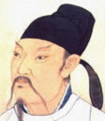

媒体列表

唐代诗人:李白
李白诗歌的语言，有的清新如同口语，有的豪放，不拘声律，近于散文，但都统一在“清水出芙蓉，天然去雕饰”的自然美之中。
唐代诗人：杜甫
在杜甫中年因其诗风沉郁顿挫，忧国忧民，杜甫的诗被称为“诗史”。他的诗词以古体、律诗见长，风格多样，以“沉郁顿挫”四字准确概括出他自己的作品风格，而以沉郁为主。
宋代词人:李清照
李清照出生于书香门第，早期生活优裕，其父李格非藏书甚富，她小时候就在良好的家庭环境中打下文学基础。所作词，前期多写其悠闲生活，后期多悲叹身世，情调感伤。